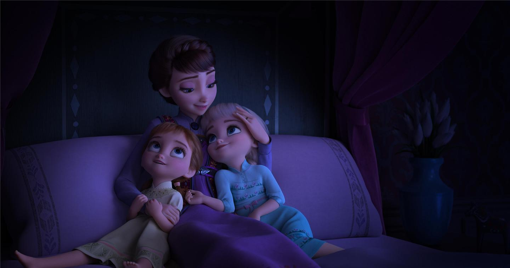

伊杜娜摇篮曲 · Evan Rachel Wood · 时长 2:05
Where the north wind meets the sea
北风与大海相遇之处
There's a river full of memory
有一条满载记忆的河流
Sleep, my darling, safe and sound
睡吧，我亲爱的，安然入梦
For in this river all is found
因为在这条河里，一切都能找到
In her waters, deep and true
在她的深处，深邃而真实
Lie the answers and a path for you
藏着答案，也藏着你的道路
Dive down deep into her sound
深入她的声音
But not too far or you'll be drowned
但别太深，否则你会溺毙
Yes, she will sing to those who'll hear
是的，她会向愿意倾听的人歌唱
And in her song, all magic flows
在她的歌声中，一切魔法流淌
But can you brave what you most fear?
但你能勇敢面对你最恐惧的吗？
Can you face what the river knows?
你能面对河流所知的一切吗？
Where the north wind meets the sea
北风与大海相遇之处
There's a mother full of memory
有一位满载记忆的母亲
Come, my darling, homeward bound
来吧，我亲爱的，归家吧
When all is lost, then all is found
当一切失去，一切才会找到
来源：Disney 官方 / Frozen II (2019) 原声带
“All Is Found” 是《冰雪奇缘2》（2019）的开篇摇篮曲，由为艾莎与安娜的母亲——伊杜娜王后配音的 Evan Rachel Wood 演唱。它以一段温柔的催眠曲形式，在安娜与艾莎童年入睡时由母亲吟唱，是整部续集的“叙事心脏”与主题 compass。
歌曲以“北风与大海相遇之处，有一条满载记忆的河流”起笔，指向神话中的记忆之河 Ahtohallan（阿托哈兰）。它既是安抚女儿“安然入梦”的母爱之歌，也是一段 Northuldra（北地原民）智慧的密码：记忆如河流般流动而有力；自然的双重性（既是魔法之源也是危险之地）；寻求真相需勇气与代价（“别太深，否则你会溺毙”是隐喻将被真相淹没）。结尾“当一切失去，一切才会找到（When all is lost, then all is found）”是整部电影的哲学核心——唯有放下执念、失去既定认知，方能找到真实自我。
这首歌几乎预告了全片情节：它将艾莎引向北方、跨过暗海去寻找 Ahtohallan；“别太深否则溺毙”精准预示艾莎在河心被真相冻结的结局；“她会向愿意倾听的人歌唱”即只有艾莎能听见的神秘呼唤，后被揭示为母亲记忆的声音。克里斯托夫·贝克（Christophe Beck）把“All Is Found”的主题旋律反复编织进配乐关键处（艾莎驯服精灵、唤回记忆时），确立它作为全片核心音乐动机。在叙事上，它与片尾“Show Yourself”构成问答闭环——“All Is Found”是母亲的提问，“Show Yourself”是女儿归家的回答。
词曲仍由奥斯卡搭档 Kristen Anderson-Lopez 与 Robert Lopez 创作。影片灵感汲取北欧与萨米（Sámi）文化：Ahtohallan 呼应北欧神话中如 Mímisbrunnr（密米尔之泉）般的智慧之泉；萨米人的 joik 吟唱传统则体现在全系列开篇的“Vuelie”中。作为一首 Northuldra 母亲的摇篮曲，它把“记忆之河”而非“历史之书”作为结构核心，体现了北地原民与自然、记忆和谐共处的世界观。片尾 Kacey Musgraves 翻唱版额外包含电影未采用的第四段歌词（“Until the rivers' finally crossed… On your way to being found”），补全了“迷路方能寻见”的意象。
歌曲收录于 2019 年《Frozen II》原声带，由 Kristen Anderson-Lopez & Robert Lopez 创作、Stephen Oremus 指挥声乐编排。Evan Rachel Wood 以温柔而略带哀愁的声线诠释伊杜娜，配器以木管与弦乐营造空灵氛围。旋律中贯穿一个被称为“quatrefoil（四叶草）”的简易四音动机，作为全片配乐的音乐速记，串联起各曲目、建立听觉连续性。歌曲在 D23 Expo 首曝时，便以“伊杜娜对幼年艾莎、安娜吟唱”的片段惊艳观众。
评论与乐迷普遍视其为《冰雪奇缘2》最具诗意、最被低估的曲目。它用一首短短的摇篮曲“提前唱出了整部剧情”，其隐喻密度与成熟气质备受称道。许多解析指出，歌曲表面是母爱安抚，实则是伊杜娜留给女儿的“加密地图”——指引她们完成自己未竟的、愈合自然与人类裂痕的使命。其哀而不伤的旋律与“母亲声音”的神秘气质，被乐评赞为原声带中最动人的一首。
作为《Frozen II》原声带（同样登顶 Billboard 200，并获两项格莱美提名）的开篇曲，“All Is Found”随电影风靡全球。除 Evan Rachel Wood 原版外，片尾 Kacey Musgraves 乡村风翻唱版亦广受好评，进一步扩展了歌曲的听众群。它虽未单独获奥斯卡提名，却以深远的隐喻与母女情感联结，成为续集文化讨论中最常被解读的文本之一。
